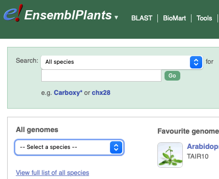
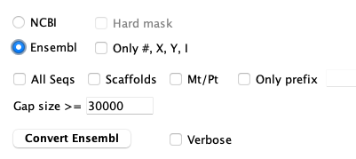

xToSymap and ConvertEnsembl were updated in v5.8.6.
Ensembl supplies FASTA formatted files for genome sequence and GFF formatted files for the annotation The following provides a simple scheme to produce the correctly formatted files for SyMAP.
Ensembl has recently changed and does not work for obtaining genomic and
GFF files as discussed below.
However, the links
Archives and
Plants
are to the old site and still works as discussed below.
|
|
Reasons to convert files
- Only chromosome and optional scaffold sequences are processed.
- Only the 'protein-coding' genes are processed.
- The exons and CDSs from the canonical or longest mRNA are saved (symap only loads one mRNA).
- Gene attributes:
ID From the input gene attributes. Name From the input gene attributes (if it is not equal ID). desc Is the gene description, where symbols (e.g. %3B) are replaced with the correct character.
It removes the ending "[Source:..." from the input description.rnaID Is equal to the canonical or longest mRNA ID. Following the ID is (n), where n=number of mRNAs for the gene.
Download
The following instructions were updated on 21-Jan-2026.- Go to Ensembl. For plants and fungi, go to EnsemblPlant and EnsemblFungi, respectively.
|  |


Convert files
| xToSymap | Scaffolds | Go to top |
- Go to the symap_5/data/seq directory.
- Make a subdirectory for your species (see Project directory) and move the FASTA and GFF files into the directory.
-
Start the xToSymap program.
- Select the appropriate xToSymap Ensembl options (described below).
- Then select Convert.
data/seq/cabbE/
Brassica_oleracea.BOL.59.gff3.gz
Brassica_oleracea.BOL.dna_sm.toplevel.fa.gz
annotation/
anno.gff
gaps.gff
sequence/
genomic.fna
xToSymap
|
 | The FASTA file must end in ".fa" and the annotation file
must end in ".gff3" (the Ensembl defaults). They may be zipped, i.e. have a '.gz' suffix.
For an explanation of the options, see Convert. |

Rules: There are variations in the text associated with >seqid header lines. The rules used by this script are as follows:
- Chromosomes: A sequence is considered a chromosome if: (a) the ">" is followed by a # (number), X, Y, or roman numeral,
or (b) the header line contains the word 'chromosome'.
- The exception is when the header line starts with '>Mt' or '>Pt', these will not be output unless Mt/Pt is selected.
- Chromosomes are always output unless Only prefix is set, and the prefix does not match.
- >seqid: If the ">" line contains 'chromosome N', where N={number, X, Y or roman numeral},
than this number is used. Otherwise, the word following 'chromosome' is used (e.g. C1).
For example,
>C1 dna_sm:chromosome chromosome:BOL:C1:1:43764888:1 REF
is replaced with
>C1 C1 chromosome
- Scaffolds: A sequence is considered a scaffold if the header line contains the word 'scaffold'.
- They will only be output if Scaffolds is selected.
- >seqid: 'Scaf' followed by a consecutive number.
- Unknown: All other ">" entries are considered 'unknown'.
- They will only be output if Only prefix matches the input header line seqid.
- >seqid: 'Seq' followed by a consecutive number.
Scaffolds
By default, the Convert option creates the genomic.fna file with only the chromosomes. However, you can have it also include the scaffolds by selecting Scaffolds. This will include all chromosomes and scaffolds in the genomic.fna file, where they will be prefixed 'C' and 's', respectively. Beware, there can be many tiny scaffolds. If they all aligned in SyMAP, it causes the display to be very cluttered. Hence, it is best to just align the largest ones (e.g. the longest 30); merge them if possible, then try the smaller ones. You should set the following SyMAP project's Parameters:- Group prefix needs to be blank as there is no common prefix now.
- Minimum length should be set to only load the largest scaffolds.
Calculate the length using the xToSymap Lengths.
General
| Load files into SyMAP | Editing the script | What the ConvertEnsembl script does | Go to top |
Load files into SyMAP
The above scenario puts the files in the default SyMAP directories.- When you start up ./symap, you will see your projects listed on the left of the panel (e.g demos).
- Check the projects you want to load, which will cause them to be shown on the right of the symap panel.
- For the project you want to load, open the Project Parameters panel to enter the appropriate values.
- Then select Load Project.
Editing the ConvertEnsembl script
The script scripts/ConvertEnsembl.java executes the same code as the xToSymap Ensembl Convert. The Ensemble FASTA files are not consistent in their header lines, hence, the parsing could be incorrect. If it is not parsing the FASTA file correctly, edit the program as described here.The GFF files may also not be consistent, but all of the Tested genomes were consistent, along with others I have tried. Nevertheless, if you want to change the attributes, you may do so in the script.
What the ConvertEnsembl script does | Go to top |
- Sequences are output according to the options selected and Rules.
- Gaps of >30,000 are written to the annotation/gap.gff file (this value can be changed in the xToSymap interface).
- Only lines with the 'type' (3rd column) equal gene, mRNA, exon and CDS are read.
- Genes with biotype=protein_coding are written to file, followed by the canonical mRNA and its exons and CDSs.
- All lines have their seqid replaced with the assigned seqid used in the FASTA file.
- The only gene attributes retained are ID,
description and Name
(if it is not the same as ID).
It removes the ending "[Source:..." from the input description.
If there is no description, it will be assigned "uncharacterized protein". - Two gene attributes are added:
- rnaID is equal to the canonical mRNA ID.
- proteinID is equal to the CDS protein-id attribute value. However, if the protein-id is the same as the rnaID, it is not included.
| Go to top |
Email Comments To: cas1@arizona.edu